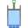

PartialLumpedVesselLumped volume with a vector of fluid ports and replaceable heat transfer model |
Diagram
{kind=link}
Information
This information is part of the Modelica Standard Library maintained by the Modelica Association.
This base class extends PartialLumpedVolume with a vector of fluid ports and a replaceable wall HeatTransfer model.
The following modeling assumption are made:
- homogeneous medium, i.e., phase separation is not taken into account,
- no kinetic energy in the fluid, i.e., kinetic energy dissipates into the internal energy,
- pressure loss definitions at vessel ports assume incompressible fluid,
- outflow of ambient media is prevented at each port assuming check valve behavior.
If
fluidlevel < portsData_height[i]andports[i].p < vessel_ps_static[i]mass flow at the port is set to 0.
Each port has a (hydraulic) diameter and a height above the bottom of the vessel, which can be configured using the portsData record.
Alternatively the impact of port geometries can be neglected with use_portsData=false. This might be useful for early
design studies. Note that this means to assume an infinite port diameter at the bottom of the vessel.
Pressure drops and heights of the ports as well as kinetic and potential energy fluid entering or leaving the vessel are neglected then.
The following variables need to be defined by an extending model:
input fluidVolume, the volume of the fluid in the vessel,vessel_ps_static[nPorts], the static pressures inside the vessel at the height of the corresponding ports, at zero flow velocity, andWb_flow, work term of the energy balance, e.g., p*der(V) if the volume is not constant or stirrer power.
An extending model should define:
parameter vesselArea(default: Modelica.Constants.inf m2), the area of the vessel, to be related to cross flow areas of the ports for the consideration of dynamic pressure effects.
Optionally the fluid level may vary in the vessel, which effects the flow through the ports at configurable portsData_height[nPorts].
This is why an extending model with varying fluid level needs to define:
input fluidLevel (default: 0m), the level the fluid in the vessel, andparameter fluidLevel_max (default: 1m), the maximum level that must not be exceeded. Ports at or above fluidLevel_max can only receive inflow.
An extending model should not access the portsData record defined in the configuration dialog,
as an access to portsData may fail for use_portsData=false or nPorts=0.
Instead the predefined variables
portsData_diameter[nPorts],portsData_height[nPorts],portsData_zeta_in[nPorts], andportsData_zeta_out[nPorts]
should be used if these values are needed.
Parameters (17)
| energyDynamics |
Value: system.energyDynamics Type: Dynamics Description: Formulation of energy balance |
|---|---|
| massDynamics |
Value: system.massDynamics Type: Dynamics Description: Formulation of mass balance |
| substanceDynamics |
Value: massDynamics Type: Dynamics Description: Formulation of substance balance |
| traceDynamics |
Value: massDynamics Type: Dynamics Description: Formulation of trace substance balance |
| p_start |
Value: system.p_start Type: AbsolutePressure (Pa) Description: Start value of pressure |
| use_T_start |
Value: true Type: Boolean Description: = true, use T_start, otherwise h_start |
| T_start |
Value: if use_T_start then system.T_start else Medium.temperature_phX(p_start, h_start, X_start) Type: Temperature (K) Description: Start value of temperature |
| h_start |
Value: if use_T_start then Medium.specificEnthalpy_pTX(p_start, T_start, X_start) else Medium.h_default Type: SpecificEnthalpy (J/kg) Description: Start value of specific enthalpy |
| X_start |
Value: Medium.X_default Type: MassFraction[Medium.nX] (kg/kg) Description: Start value of mass fractions m_i/m |
| C_start |
Value: Medium.C_default Type: ExtraProperty[Medium.nC] Description: Start value of trace substances |
| nPorts |
Value: 0 Type: Integer Description: Number of ports |
| use_portsData |
Value: true Type: Boolean Description: = false to neglect pressure loss and kinetic energy |
| portsData |
Value: Type: VesselPortsData[if use_portsData then nPorts else 0] Description: Data of inlet/outlet ports |
| m_flow_nominal |
Value: if system.use_eps_Re then system.m_flow_nominal else 1e2 * system.m_flow_small Type: MassFlowRate (kg/s) Description: Nominal value for mass flow rates in ports |
| m_flow_small |
Value: if system.use_eps_Re then system.eps_m_flow * m_flow_nominal else system.m_flow_small Type: MassFlowRate (kg/s) Description: Regularization range at zero mass flow rate |
| use_Re |
Value: system.use_eps_Re Type: Boolean Description: = true, if turbulent region is defined by Re, otherwise by m_flow_small |
| use_HeatTransfer |
Value: false Type: Boolean Description: = true to use the HeatTransfer model |
Inputs (2)
Connectors (2)
| ports |
Type: VesselFluidPorts_b[nPorts] Description: Fluid inlets and outlets |
|
|---|---|---|
| heatPort |
Type: HeatPort_a |
Components (4)
| system |
Type: System Description: System properties |
|
|---|---|---|
| medium |
Type: BaseProperties |
|
| portsData |
Type: VesselPortsData[if use_portsData then nPorts else 0] Description: Data of inlet/outlet ports |
|
| heatTransfer |
Type: HeatTransfer |
Extended by (3)
|  |
Modelica.Fluid.Machines varying cylindric volume depending on the position of the piston |
|
Modelica.Fluid.Vessels Simple tank with inlet/outlet ports |
|
|
Modelica.Fluid.Vessels Volume of fixed size, closed to the ambient, with inlet/outlet ports |